来源：https://p00to5ni4e8.feishu.cn/docx/S8Rbdl32Xoyg79x0YSdcQduvnre
我是凌心，一个85后宝妈，全职带娃11年，线上副业9年，5年闲鱼电商经验，万人闲鱼社群选品官，指导老师。
感谢生财，很荣幸，在咱们生财3月份和6月份的闲鱼高客单价航海里担任航海教练。
闲鱼卖货，七分选品，三分运营，由此可见选品的重要性。
有的宝子说，做闲鱼卖货，在选品的时候没有思路，想趁着零碎时间上架几个选品，看了半天不知道上架什么。就算上了几个选品，出单也不是很理想。
凌心认为：选品方法不在于多，而在于用好其中的一到两个就可以了。
我经常用的几个选品方法（非付费）分享给大家，希望能帮助到做闲鱼卖货，因为选品问题纠结犹豫的宝子。
同行是最好的老师，这句话适合任何副业赛道。每天我会花费半个小时左右的时间在闲鱼上对标同行。
具体操作如下：
第一步：打开闲鱼APP，点击右上角分类。
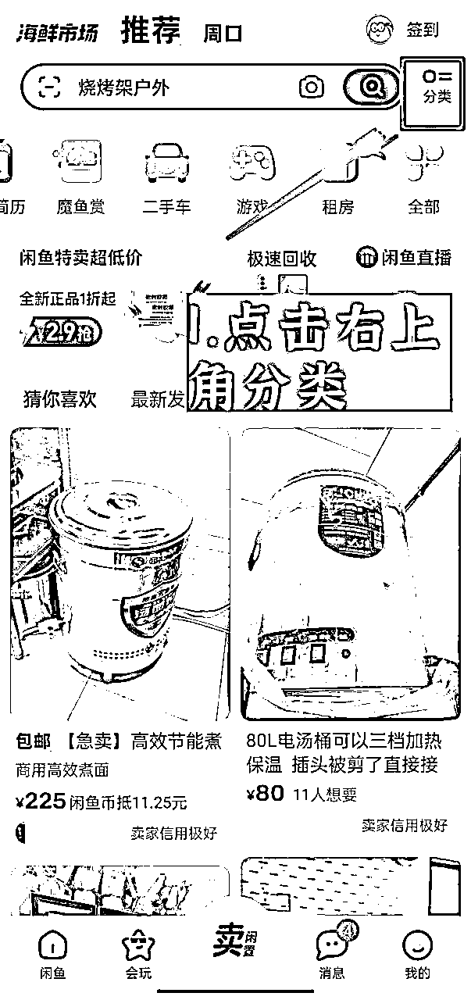
第二步：点击分类，会出现下图界面。选择自己上架的选品分类，点击进去，以家用电器举例：
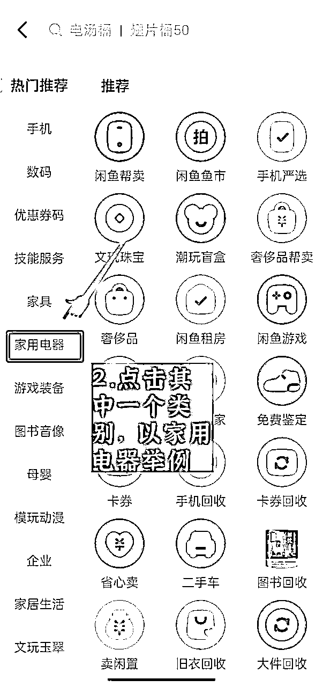
第三步：点击家用电器，会出现以下界面。任意选择其中的一个品类即可。以消毒柜举例：
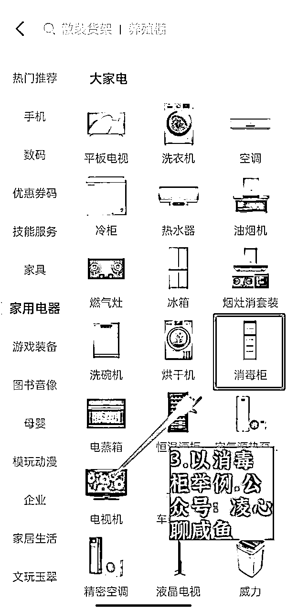
第四步：点击上图中的消毒柜，出现以下界面。点击“我想要”数超过100的链接。
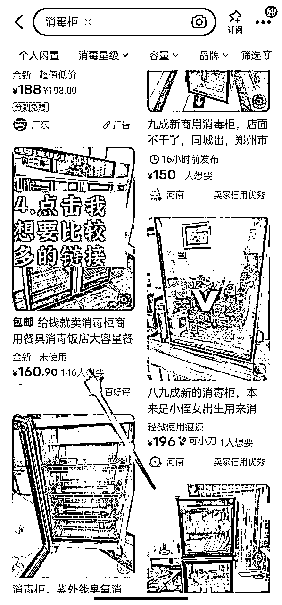
第五步：点击进去，显示刚刚来过，或者来过的时间间隔不长的都可以作为对标。
如果显示来过的时间比较长，即使这个产品的我想要数比较多，也建议放，。这一点很重要！
之前有一个宝子，说我对标这个产品“我想要”数上千个，为啥我上架曝光都没有，我让他发给我链接，显示来过时间是200多天前来过闲鱼。像这种选品，可参考的意义不大。
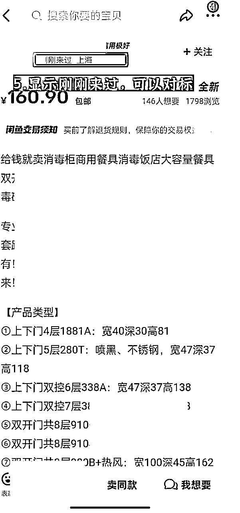
第六步：顺便往下拉，看下来闲鱼的时间以及卖出数量，这个也可以作为一个参考细节。
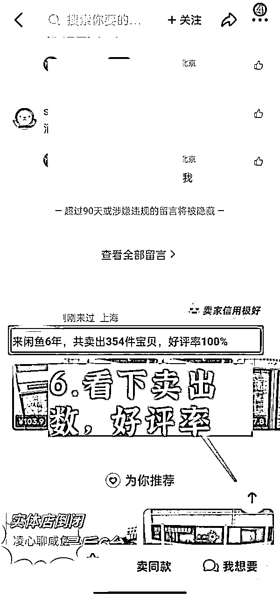
第七步：如果能看到同行的动态，那是相对比较好的，可以看下同行的上架时间以及卖出的情况。顺便再看下同行其他卖的比较好的品。
看不到的话，那就看下同行的评论区，也可以作为参考。
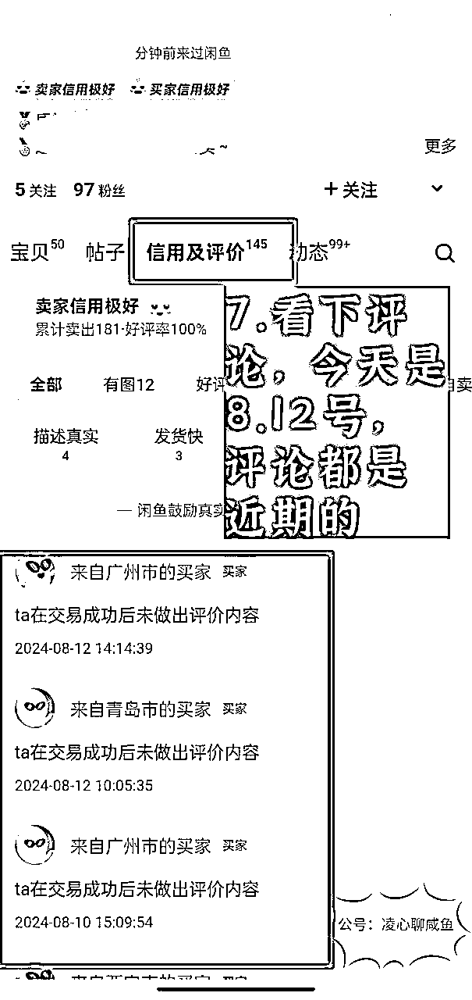
第八步：看下有图的评价部分，看下评论时间，都是近期的，证明这个品最近卖的不错。。另外图片完整，清晰的话，也可随手保存下来备用。
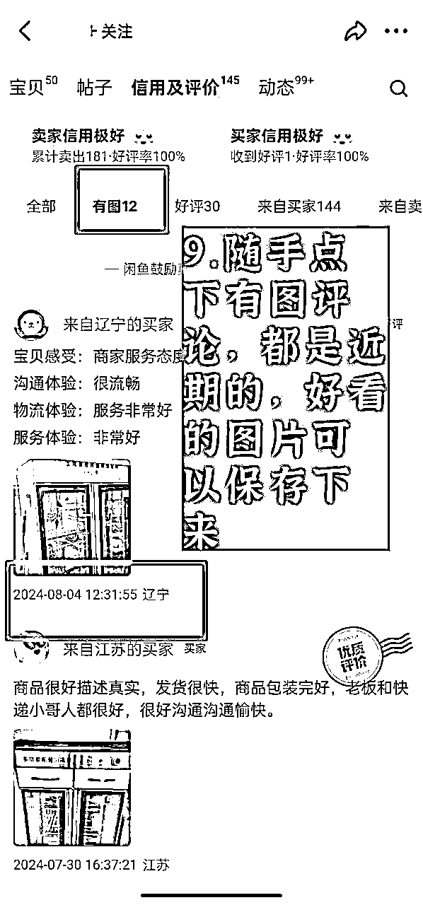
另外，也可以看下同行的关注界面，从他的关注里大致看下，有没有比较不错的店铺以及选品。
拼多多，淘宝，京东，抖音，阿里巴巴等这些电商平台都可以给你选品灵感。如果谈不成厂家合作货源的话，依然建议下单的时候拼多多下单。多多的售后相对其他平台真的很给力。
以拼多多举例：
第一步:打开拼多多app，点击首页上方的任意一个产品分类，以“家具”举例：
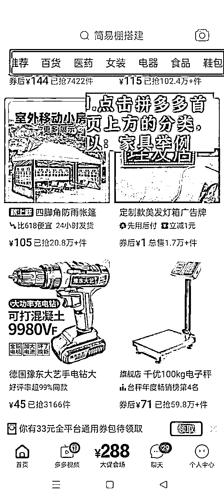
第二步：点击家具，会出现以下界面，有每日更新的排行榜，也有小编推荐，以及每个分类里都有子类目。
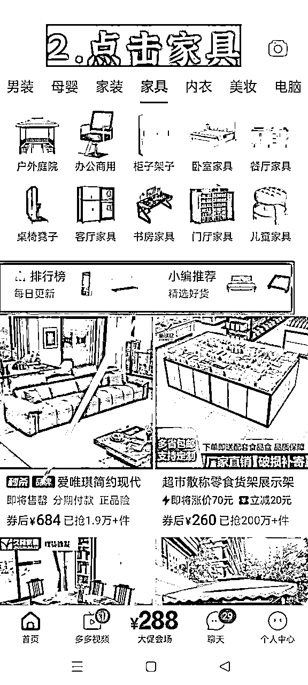
第三步：点击排行榜，会出现住宅家具类的日排行榜。同样里面也有：柜子架子，卧室家具，办公商用等这些子分类，以其中一个举例：
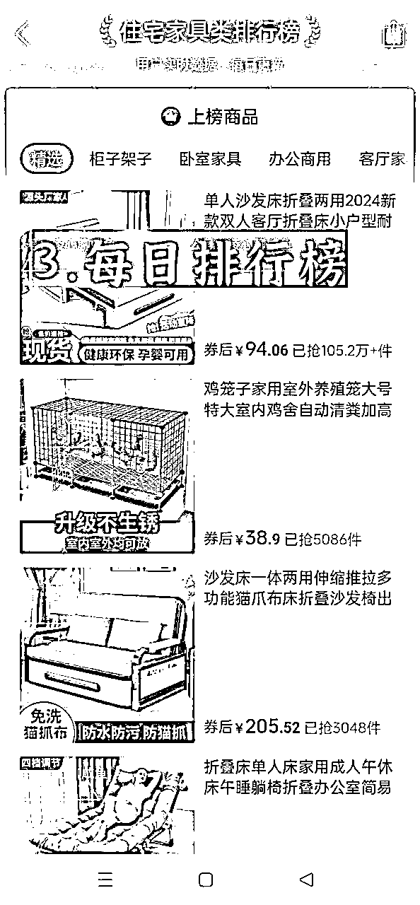
第四步：点击日排行榜中的“柜子架子”即可查看这个类别的日排行榜。
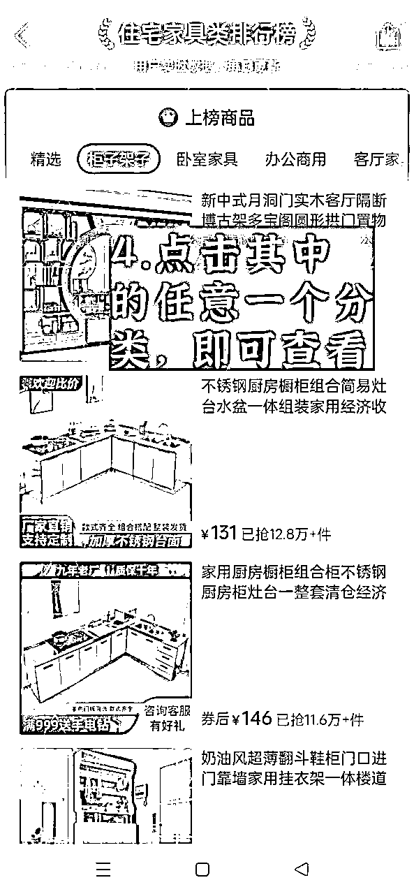
第五步：同样，接着第二步来，点击小编推荐，也有一些选品可以作为参考。
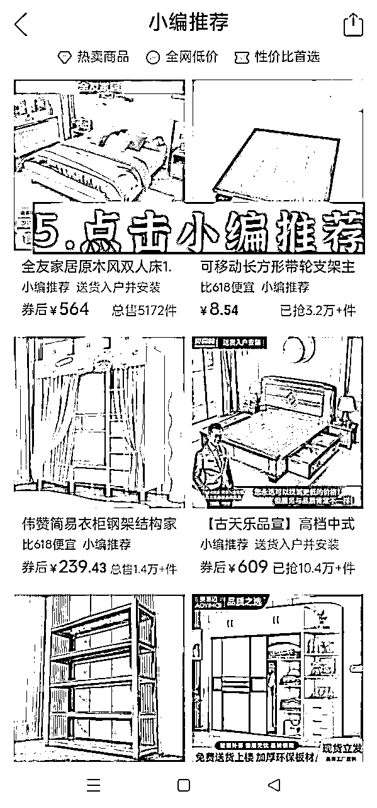
第六步：接着第二步来，点击办公商用，会出现以下界面，点击其中的一个子类目。
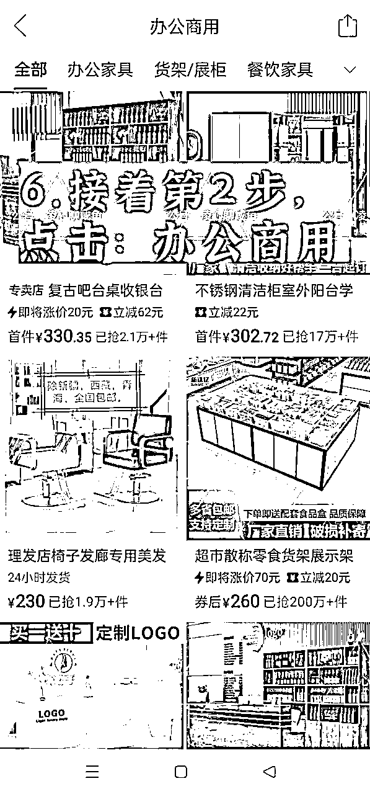
第七步：以“办公家具”举例，点击办公家具，出现以下界面。
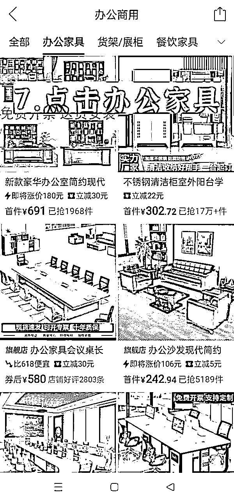
以上是拼多多平台的选品思路，其他电商平台也是大同小异的，根据这个思路去选品即可。
选好的品，在闲鱼平台搜一下，看下这个品同行的我想要数如何，最近销售的情况如何等一些细节问题。
关键词选品法适合所有的电商平台，同样是以拼多多为例：
在搜索框里输入不同种类的关键词，会出来相应类目的选品推荐，找到比较符合自己店铺属性的类目点击查看即可。
比如:输入“农产品”，在下拉框里选择农用工具，土特产展示架，农产品加工机械与设备等，这些类别里面有的产品就卖的不错，点击查看即可。
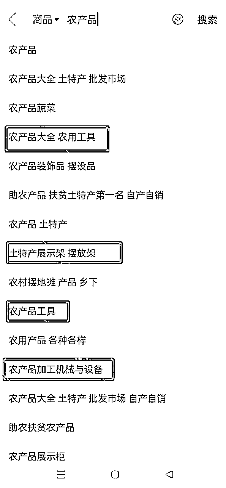
同样，在搜索栏里输入：不锈钢，畜牧用品，海边旅游等不同的关键词，也能找到比较合适的选品。
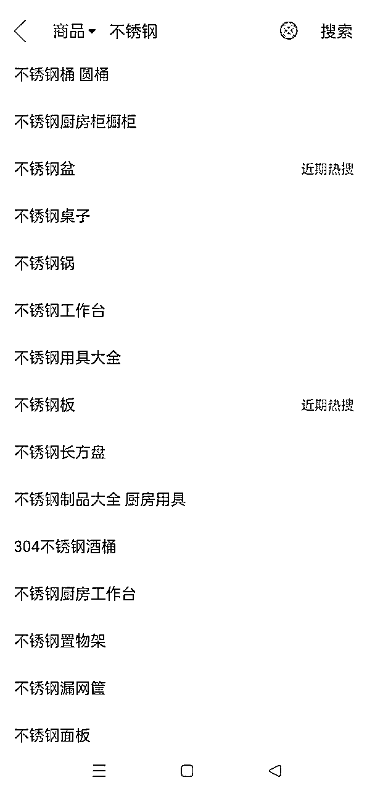
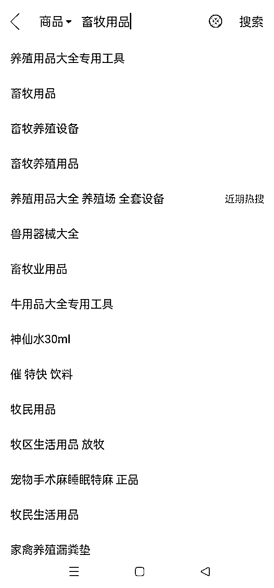
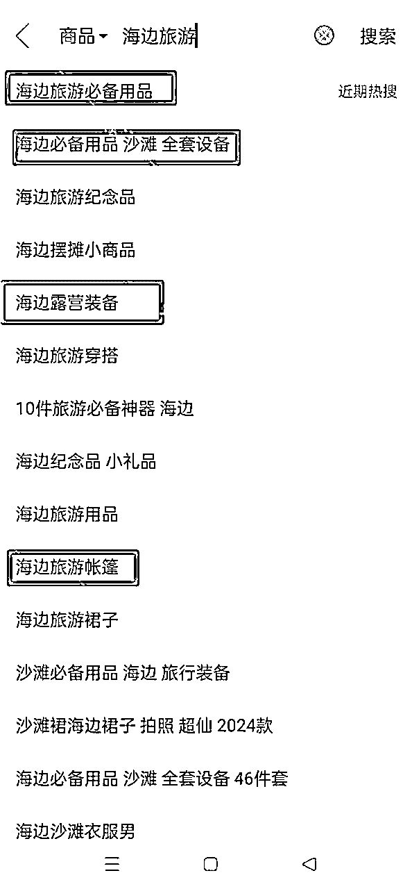
热点不是天天有，但是有热点你抓住先机，就可以美美的赚一波，比如，即将迎来开学季，拉杆箱等开学季的产品。
打印机以及打印机周边产品，出行工具类：比如自行车，电动车（大学很多学生必备工具之一）可以上一波。
接着九月十号教师节，教师节礼物也可以上一波，热点选品法搭配关键词选品法，更好用。
平时也就是普普通通的选品，但是有热点加持的时候，会有惊喜。
这个就比较简单了，根据咱们的日常生活去选品，比如夏季卖风扇，空调，冰粉手推车，摆摊推车，车载冰箱，防晒用品，工业风冷机， 一个选品又能拓展出很多同类型的或者周边产品。
自己不知道的，还可以借助百度、知乎、搜一下也能有不少灵感。比如我百度夏季家里必备居家好物，有很多推荐的文章，车载遮阳伞，即热饮水机，无叶电风扇等可能有的东西你原来并不知道，但是上架闲鱼有可能就是爆款
只要不是闲鱼违规的选品，都可以尝试上架销售！
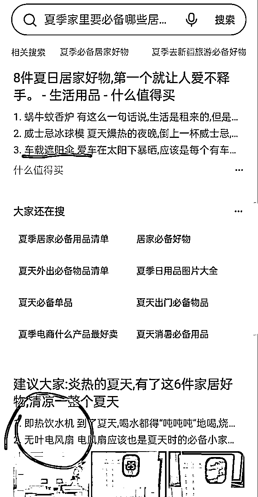
另外，有AI工具搜索也可以作为参考：
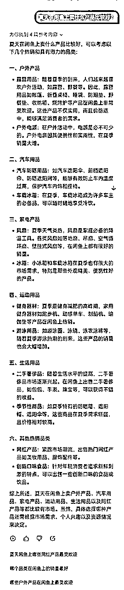
以上五种选品方法任选一种，举一反三去使用，一定会选出不错的品。希望可以帮助到做闲鱼无货源因为选品问题纠结犹豫的宝子。祝：大卖！
以下是之前在生财分享的一份实操手册，是完整的流程，感兴趣的宝子可以点击查看：
每月可多收入5000+的闲鱼卖货实操详细流程分享给需要的朋友：https://t.zsxq.com/MdNEA